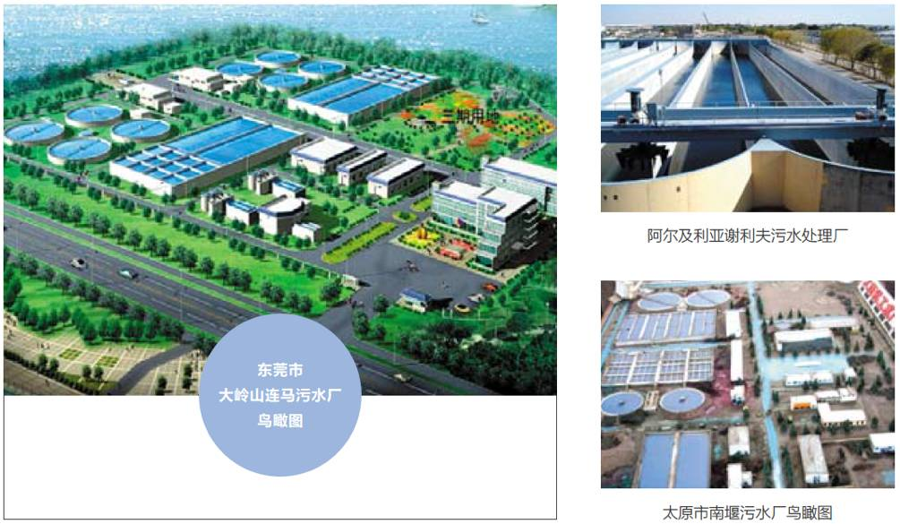
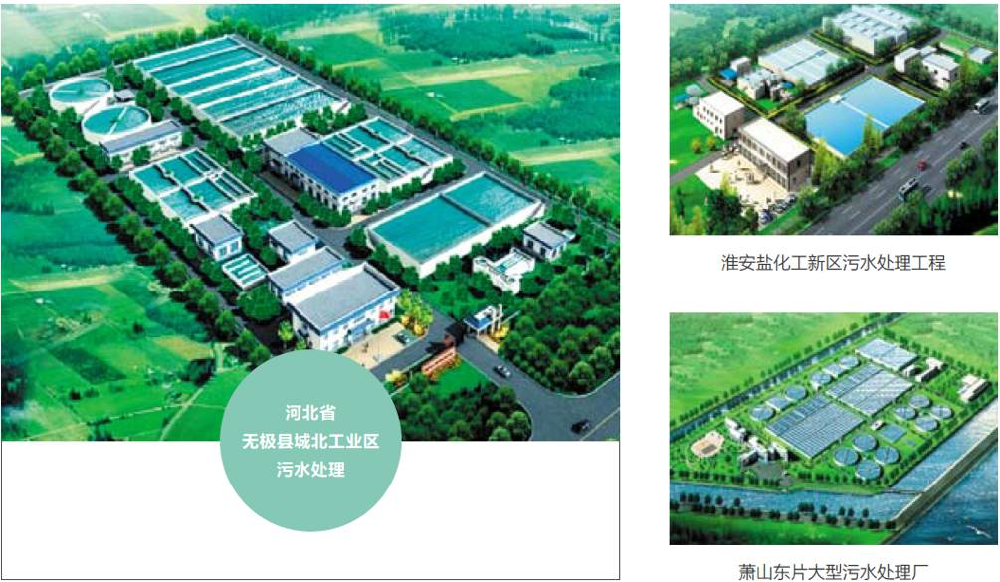
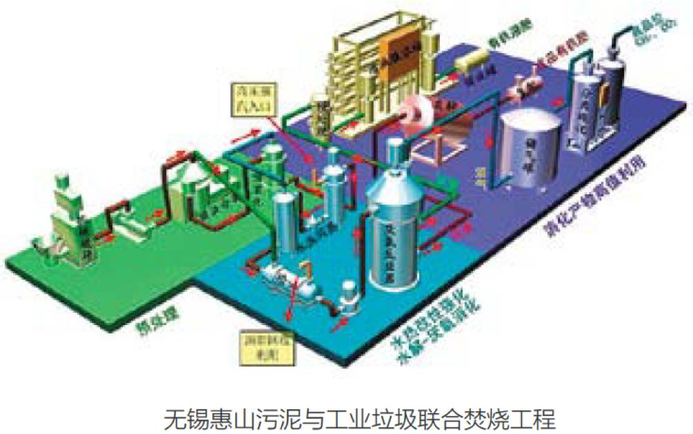
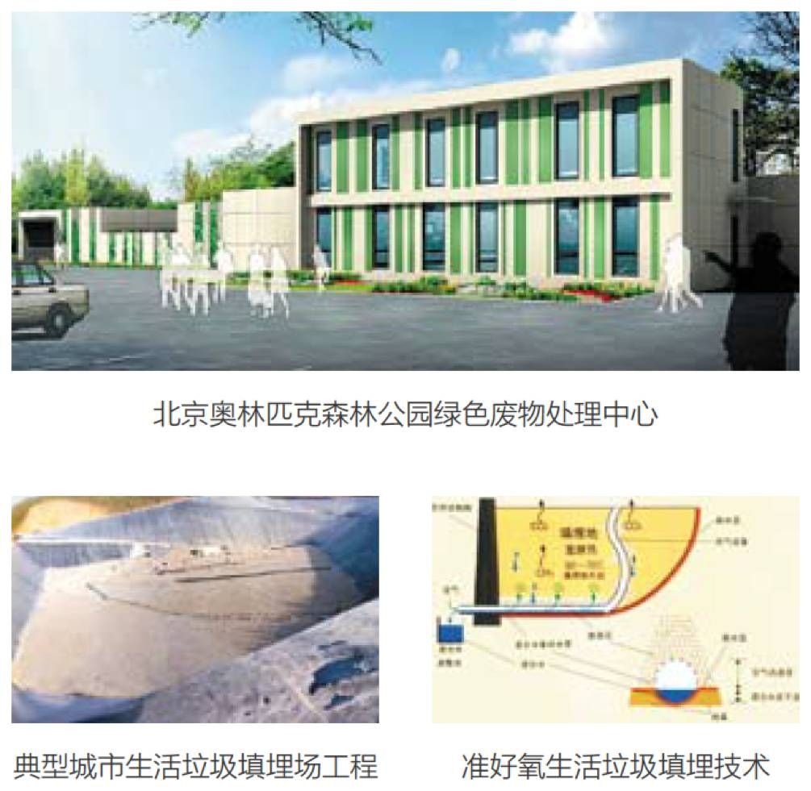
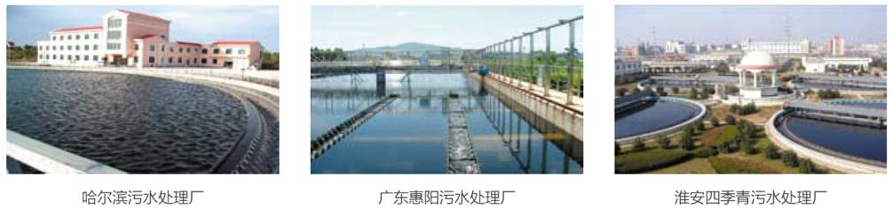

Technology
主要技术
-
Municipal wastewater treatment & recycling
市政污水处理及回用技术● 新型膜- 生物反应器（MBR）技术
● 新型生物滤池技术
● 超滤、反渗透技术
● UNITANK SBR法 A/O A2/O 技术
● 人工湿地处理技术
● 电吸附除盐技术
● 强化生物脱氮除磷技术
● 臭氧氧化技术
● 新型氧化沟技术
● 臭氧- 生物活性炭技术
Industrial wastewater treatment & reuse
工业废水处理及回用技术● 染料工业废水综合处理技术
● 焦化废水处理技术
● 印染工业园综合处理技术
● 造纸黑液循环回用技术
● 高浓度有机废水厌氧处理技术
● 难降解有机废水湿式氧化技术及关键处理设备
Solid waste treatment recovery
固废处理资源化技术● 市政固体废物处理处置项目
● 简易固废堆放场环保改造和场地修复技术
● 城市固体废物处置规划和设计
● 生活垃圾堆放场的环保改造和土地再利用
● 循环式准好养卫生填埋技术
● 城市生物质废物处理及燃气化技术
Environmental site assessment & remediation
环境场地评价与修复● 环境场地调查
● 污染场地修复与监测
Service
服务Municipal wastewater treatment
城市污水处理工程设计
● 太原市南堰污水厂技改扩容及污水回用工程(10万 m3/d)
● 河北省乐亭县污水处理厂（7万 m3/d）
● 东莞市大岭山连马污水处理厂一期工程（8万 m3/d）
● 东莞市桥头污水处理厂特许权BOT项目（5万 m3/d）
● 辽宁省大石桥市城市污水处理工程（6万 m3/d ）
● 阿尔及利亚谢利夫市污水处理工程（4万 m3/d）
主导工艺
● 采用 A2/O、UNITANK、氧化沟、CASS等典型二级处理工艺、曝气生物滤池、MBR
关键技术
● 采新型氧化沟技术；UNITANK
● 改良A2/O处理技术；二级处理设施低成本运行技术
Industrial wastewater treatment
工业废水处理工程设计
● 萧山东片大型污水处理厂（30万 m3/d）
● 淮安经济开发区盐化工新区污水处理工程（2万 m3/d）
● 山东魏桥印染废水处理工程（3万 m3/d）
● 山西光大集团焦化废水处理工程
● 河北省无极县城北工业区污水处理厂工程（2万 m3/d）
● 陕西延长石油（集团）杨庄河炼化污水深度处理工程
主导工艺
● 采用预处理+A2/O+深度处理的组合工艺
关键技术
● O3+BAC处理技术
● 低（常）温湿催化氧化技术
● 单点排泥技术
● 前置浓密机技术
● 复合生物处理技术
● 曝气生物滤池技术
● MBR技术
Reclaimed water treatment
再生水处理工程设计
● 榆神工业区清水工业园污水处理厂工程（6万 m3/d）
● 阿拉善经济开发区污水处理及中水回用工程（5万 m3/d）
● 铁岭莲花湖人工湿地水质净化工程（6万 m3/d）
● 太化集团电吸附法污水脱盐工程（1万 m3/d）
● 无锡城北污水处理厂四期工程MBR（5万 m3/d）
······
主导工艺
● 采用BNR除磷脱氮、生态处理等生物处理与过滤、脱盐等物化处理技术相结合的深度处理工艺
关键技术
● 新型MBR；复合生物滤池技术
● 人工湿地；电吸附适度脱盐技术
Municipal biomass & sludge
城市生物质和污泥工程设计
● 深圳市城市生物质废物处置工程设计项目
● 清华大学“十一五”863计划“城市生物质废物厌氧消化关键技术研究”的重点项目，2010- 2011年将完成500吨/日规模的示范工程
● 城市生物质（菜场垃圾、厨余垃圾、市政污水厂污泥、粪便等）
主导工艺
● 水热闪蒸强化水解-厌氧消化工艺
● 喷雾干燥+回转窑焚烧工艺
Landfill engineering & leachate treatment
城市垃圾填埋场及渗滤液处理工程设计
● 北京奥林匹克森林公园绿色废物处理中心
● 河北省定州市生活垃圾填埋场工程
● 山西省原平市城市生活垃圾无害化处理工程
● 江西省兴国县生活垃圾卫生填埋场工程
● 陕西省榆林经开区市政垃圾卫生填埋场工程
关键技术
● 绿色垃圾堆肥处理技术
● 准好氧生活垃圾填埋技术
● 垃圾渗滤液处理达标技术
Industrial solid waste & hazardous waste
工业固废危险废物
工业、危险废物处理
医疗废物处理工程设计
● 青海省西宁市铬渣处置工程
● 湖南永州市医疗废物集中处置工程项目
● 新疆独山子石化工业废物处置工程
● 绥化市医疗废物集中处置中心
● 中石油恩贾梅纳炼厂固体废物处理厂工程
······
Engineering general contract
工程总承包
工程设计
● 银川市兴庆区掌政镇污水处理厂项目建设工程
● 东方电气集团（宜兴）迈吉太阳能科技有限公司污水处理BOT项目
● 西铭矿污水处理系统改造工程
● 云南省临沧双江县、狄马县、沧源县污水处理DBO项目
Site assessment & remediation
场地评价与修复
环境场地评价与修复
● 阿尔斯通石棉调查
● 天纳克(重庆)拟建场地一期场地环境评价
● 天纳克(苏州)拟建场地二期场地环境评价
● 长春一汽一期场地调查
● 天纳克(苏州)拟建场地一期场地环境评价
重金属或其它类型无机污染土壤
● 污染物的固定/稳定化处理技术
● 污染土壤固定 - 覆盖技术
● 电渗析技术
● 树脂/活性炭浮选技术
石油或其它有机污染土壤
● 污染土壤蒸汽萃取技术
● 污染土壤泥浆反应器处理技术
● 污染土壤冲洗技术
● 针对特定的顽固性污染物的溶剂萃取技术
Investment projects
投资项目
环境场地评价与修复
